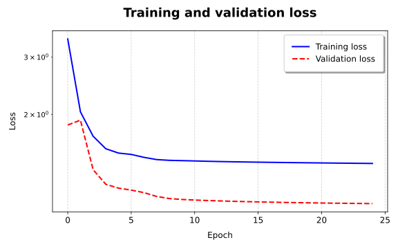
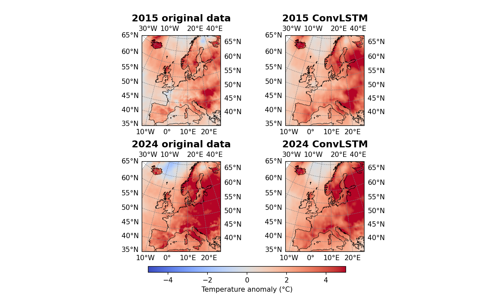
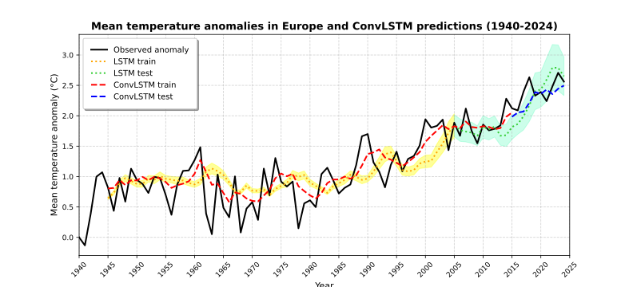
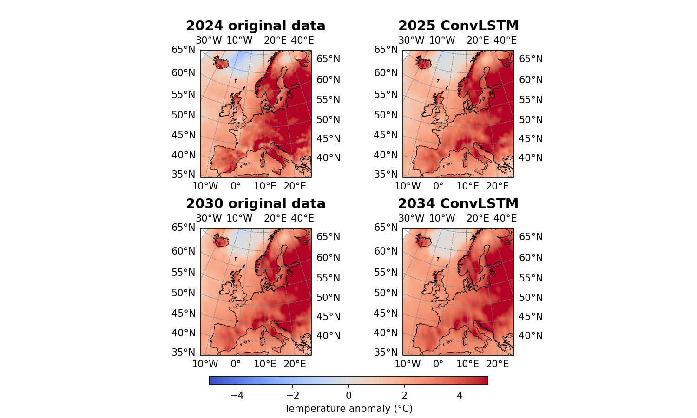
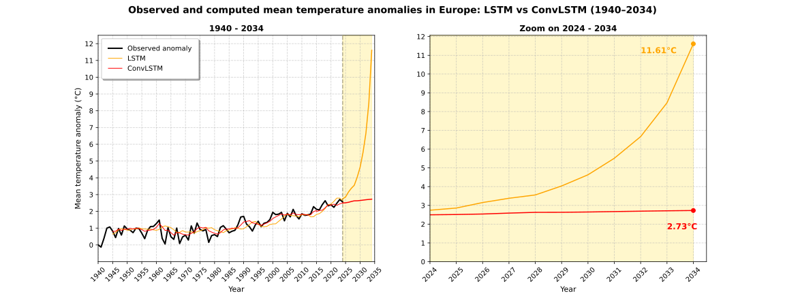

Predicting with a convolutional LSTM network the 2m air temperature anomalies in Europe from the Copernicus Climate Data Store (CDS)
The goal of this project is to build a simple Convolutional LSTM (ConvLSTM) neural network to predict temperature anomalies over Europe. The model is trained on data from 1940 to 2015 and evaluated on both the training set and a test set from 2015 to 2024. Different layer and network configurations were tested to improve the model's performance while keeping the model simple. While more complex approaches for such
a problem exist, as in this paper by Q. Guo, Z. He, and Z. Wang, this project focuses creating a model that can run on a typical laptop without needing large-scale computing resources, and can still produce meaningful results.
The model’s predictions on the training and test data are shown to give an idea of its accuracy. The training data is used to check if the model can reproduce known patterns, while the test results show its generalization to unknown data. For comparison, the performance of
the LSTM model is also included. Finally, the trained network is used to forecast future temperature anomalies up to 2034, including a comparison with the LSTM results.
I used the 2m air temperature data from the ERA5 Reanalysis dataset
provided by the Copernicus Climate Data Store (CDS). ERA5 is a global climate reanalysis dataset that provides hourly estimates of atmospheric variables, including the 2m air temperature.
The following plots summarize the main results of the project. You can view the code in the Code section, and you can download the full project
from Github to experiment and make your modifications.
Accuracy of the lstm neural network
First, the training and validation losses were plotted. The model is trained on the mean yearly temperature data from 1940 to 2014, and validated on data from 2005 to 2024.

Both the training and validation loss decrease quickly after the first few epochs, with the validation loss showing an even steeper drop. After this initial phase, both losses stabilize and remain relatively constant. The validation loss even falls below the training loss,
probably due to the nature of the data, as discussed in the LSTM approach.
Results of the ConvLSTM predictions
Then, the results of the predictions have been plotted together with the MC dropout, which is the mean of 100 forward passes, to be able to estimate the uncertainty ranges of the model's result.

The plot shows that the ConvLSTM model has learned decently. In the case of 2015, the last year from the training data, the predicted anomaly map looks quite similar to the original. The model
correctly recognizes the main warm spots, like in Iceland, parts of Northern and Eastern Europe, where the anomalies are clearly higher and appear redder. However, the model struggles more with regions
showing lower anomalies. In these areas, blue (cooler) zones often appear more red in the prediction, suggesting that the model tends to overestimate the anomaly where it should be lower.
For 2024, last year of the test set, the model's performance declines as expected. While it still identifies some of the main warming patterns, such as in Eastern Europe, Iceland, and parts of Northern Europe,
it performs poorly in other regions like Italy and the Alps, where the predicted anomalies are much lighter than the observed ones. Also, the model underestimates cooler anomalies like over the ocean, again showing a tendency to overestimate warmer anomalies.
Overall, even though the model isn't perfect, it still does a decent job at capturing the overall warming trend in Europe.
The yearly mean taken over each grid point of the ConvLSTM model have been compared to the results of the LSTM model.

The plot shows that both the LSTM and ConvLSTM predictions have their strengths and weaknesses. Specifically, as seen before, the ConvLSTM tends to smooth out areas with stronger anomalies, resulting in more neutral
predictions across the map. This leads to mean temperature anomalies that are quite close to the observed values overall, but the model has difficulty capturing the more extreme localized anomalies. So, while it captures the general trend, it
misses some of the local spatial trends.
Forecast of future temperature anomalies
With the trained model, it is now possible to make predictions about future years, forecasting year per year like in the LSTM approach.

While the first two predicted maps for 2025 and 2030 are not too bad, as they do show a progressively redder Europe, the darker localized spots in last plot for 2034 become noticeably quite blurry. Indeed, the red areas appear more faded and spread out,
almost melting into the rest of the map, making everything look more neutral. This suggests that the model struggles with predicting too far into the future, as at some point, it no longer reproduces the continued rise in temperature anomalies. Since the
forecast is based on what the model has learned, it ends up extrapolating patterns. In this way, the prediction error grows with each year, eventually becoming so large, to not be able to reproduce the overall warming trend anymore.
Altogether, these plots show the limitations of the model when forecasting beyond a certain range.
The limits of the model when predicting future years can be also seen also in an animation of the full forecast period.
The animation shows that the redder spots with higher temperature anomaly grow continuosly until around 2028, after which they only shifts slightly. This behavior aligns with how the model generates its predictions and its limitations. To predict the
anomaly for 2025, the model uses the years 2020-2024 as input, all of which are observed data. However, starting from 2026, each new prediction increasingly relies on previously computed data instead of actual observations. For instance, by 2029, the model’s
input consists of the years 2024-2028, where only 2024 is real data and the rest are predictions. Therefore, as briefly mentioned before, the errors accumulate over time. From 2029 onward, the input is composed almost entirely of the model’s own forecasts,
causing a drop of the accuracy of further predictions and results in blurrier, less realistic anomaly maps.
Again, the yearly mean of the ConvLSTM's forecast results is taken to compare to the results of the LSTM model's forecast.

Interestingly, even though the ConvLSTM model did not seem to perform that well in the temperature maps, where it tended to underestimate the growing temperature anomalies in Europe, its predictions over the forecast period turn out to be
more realistic than those from the LSTM. While the ConvLSTM results are quite flat and don't show a strong increase, they stay within a believable range. In contrast, the LSTM predictions show the anomaly growing very quickly over just 10 years.
It looks like the ConvLSTM might be underestimating the rise in temperature anomalies, while the LSTM is likely overshooting it, but ultimately only time will tell which results are closer to reality.
Creating the LSTM neural network
Install necessary packages and initialize data
import xarray as xr
from tensorflow.keras.models import Sequential
from tensorflow.keras.layers import Input, ConvLSTM2D, Conv2D
from tensorflow.keras.callbacks import EarlyStopping
import tensorflow.keras.regularizers as regularizers
import numpy as np
file = 'data_t2m_tot.nc' #2m air temperaty_test_Cure
ds = xr.open_dataset(file, chunks = {'valid_time' : 50}) #chunks for faster computation
temp = ds.t2m
Define key parameters.
yrs = range(1940, 2035)
cutoff = 76 #until year 2015
forecast = 10 #years to forecast
epochs = 25
patience = 5 #early stopping if no improvement after 5 epochs
baseline = 0.01, #early stopping if improvement stays below this threshold
start_epoch = 5 #wait 5 epochs before checking for early stopping
input_size = 5
batch_size = 4
Compute the mean temperature anomalies as the difference between the mean yearly temperature at each grid point and the value for the year 1940.
temp_grp = temp.groupby(['valid_time.year']).mean(dim=['valid_time']) #xarray with shape (:, year)
anom_year = temp_grp - temp_grp.sel(year = 1940) #lazy compute yearly anomaly
anom_year_vals = anom_year.values[:-1, :, :] #extract values and transpose to (lat, lon, year), remove last year (2025)
np.savez("anom_year_convLSTM.npz", anom_yrs = anom_year_vals)
Define a function to prepare the input data by splitting it into overlapping sequences of fixed length, similar to the approach used in the LSTM model.
Differently then in the LSTM case, it is crucial here to reshape the input and output correctly the CNN layers: Input (x) shape: batch (samples), time (years), height (lat), width (lon), channels (temp) Output (y) shape: batch (samples), height (lat), width (lon), channels (temp)
The channel dimension represents the variables of interest, in this case only the temperature. Since there's just one parameter, an extra axis is added to maintain the expected shape for the network.
Unlike the input, the output does not have a time dimension. This is because the model is trained to predict the next year's anomaly one step at a time.
def prep_data_CNN(data, input_size):
x = np.zeros((data.shape[0]-input_size, input_size, data.shape[1], data.shape[2])) #shape: batch(samples), time(years), height(lat), width(lon)
for i in range(x.shape[0]):
x[i, :, :, :] = data[i:i+input_size, :, :]
y = np.array(data[input_size:, :, :]) #shape: batch(samples), height(lat), width(lon)
x = x[..., np.newaxis] #shape: batch(samples), time(years), height(lat), width(lon), channels(temp)
y = y[..., np.newaxis] #shape: batch(samples), height(lat), width(lon), channels(temp)
return x, y
Format the data and prepare it for training and testing.
#split data
training = anom_year_vals[1:cutoff+1] #to 20
test = anom_year_vals[cutoff - input_size-1:] #-1 to let it begin with the last year of training
#format into input-output pairs
x_train, y_train = prep_data_CNN(training, input_size)
x_test, y_test = prep_data_CNN(test, input_size)
Build the neural network.
The model uses a convolutional LSTM neural network, combining both spatial and temporal pattern recognition. While the LSTM keeps track of how
the patterns change over time, the convolution looks at the grid in small 3×3 patches, capturing the spatial patterns within each year. The first two
convolutional layers have 3 and 7 filters respectively. These may seem like small numbers, but they help to keep the number of trainable parameters low,
making the model efficient while still producing reasonably good results.
The final Conv2D layer has 1 filter, which reduces the output to a single 2D anomaly map with one channel. This output is directly compared with the observed
anomaly for that year to minimize the error function and improve the model’s predictions.
def convLSTM_2D(input_size, data_height, data_width):
model = Sequential()
model.add(Input(shape=(input_size, data_height, data_width, 1)))
model.add(ConvLSTM2D(filters=3, kernel_size=(3, 3), activation='relu', padding='same', return_sequences=True, kernel_regularizer=regularizers.l2(1e-4))) #use first convolutional LSTM layer
model.add(ConvLSTM2D(filters=7, kernel_size=(3, 3), activation='relu', padding='same', return_sequences=False, kernel_regularizer=regularizers.l2(1e-4))) #use second convolutional LSTM layer
model.add(Conv2D(filters=1, kernel_size=(1, 1), activation='linear', padding='same')) #reduce to one filter
model.compile(optimizer='adam', loss='mse')
model.summary() #summary of the model
return model
convLSTM = convLSTM_2D(input_size, x_train.shape[2], x_train.shape[3])
An early stopping callback is defined to stop training once the model stops improving, as this helps save computation time and prevents overfitting by avoiding unnecessary epochs.
early_stopping = EarlyStopping(monitor = 'val_loss', #monitor the test error
patience = patience,
verbose = 1, #shows when callback is used
baseline = baseline,
restore_best_weights = True, #restore weights from the best performing epoch
start_from_epoch = start_epoch)
Define key functions for plotting, like the grid bouds.
lat = ds.latitude.values #extract values for meshgrid
lon = ds.longitude.values
lat_bounds = np.linspace(lat[0] + 0.2, lat[-1] - 0.2, len(lat)) #adjust the coordinates of the grid
lon_bounds = np.linspace(lon[0] + 0.2, lon[-1] - 0.2, len(lon))
lon_grid, lat_grid = np.meshgrid(lon_bounds, lat_bounds) #create meshgrid
europe_projection = ccrs.EuroPP() #projection for Europe
Display the results in a temperature plot.
These temperature maps show the mean yearly anomalies across Europe, where each point represents the temperature anomaly
relative to 1940. The results are compared to those predicted by the ConvLSTM model. The first row displays the anomalies for 2015,
the final year of the training period, while the second row shows the anomalies for 2024, the final year in the test set. As usual,
warmer colors indicate higher anomalies and cooler colors indicate lower ones.
Define the different y axes, as each test- and training dataset has a different length.
yrs_train_CNN = yrs[input_size:cutoff] #years for training data ConvLSTM
yrs_test_CNN = yrs[cutoff-1:-forecast] #years for test data ConvLSTM
yrs_train = yrs[input_size:len(res_train_LSTM)+input_size] #training LSTM
yrs_test = yrs[len(res_train_LSTM)+input_size-1:-forecast] #test LSTM
Plot the data in a line plot.
The plot shows various lines, the original anomaly data, and the ConvLSTM and LSTM results for both training and test periods,
each in different colors. Shaded areas indicate the error around the LSTM predictions.
DWith the trained model, it is now possible to make predictions about future years, forecasting year per year like in the LSTM approach.
last = anom_year_vals[-5:][np.newaxis,..., np.newaxis] #last 5 years, add channel dimension temperature
preds_future = [res_test[-1, :, :, 0]] #initialize with the last year of test data
for i in range(forecast):
pred = convLSTM.predict(last, verbose=1) #predict next year
preds_future.append(pred[0, :, :, 0]) #append the prediction to the list
last = np.concatenate((last[:, 1:], pred[:, np.newaxis]), axis=1)
np.savez("preds_future_convLSTM.npz", preds_future = preds_future)
And plot the result in a temperature plot.
Here, the original data from 2024, the last available year, is shown on the left, followed by 2025, the first fully forecasted year,
then 2030, and finally 2034, the last year of the forecast.
The limits of the model when predicting future years can be also seen also in an animation of the full forecast period.
Import needed packages.
import matplotlib.animation as animation
from matplotlib.animation import FuncAnimation
fig, ax = plt.subplots(subplot_kw={'projection': europe_projection}, dpi=150, figsize=(10, 6))
yrs_ind = range(forecast+1) #include 2024
data = preds_future[0] #first plot
map = ax.pcolormesh(lon_grid, lat_grid, data, transform=ccrs.PlateCarree(),
cmap='coolwarm', shading='auto', vmin = -5, vmax = 5)
#aesthetics
ax.coastlines(linewidth=0.5)
ax.gridlines(draw_labels=True, color='gray', linestyle='--', linewidth=0.5)
cbar = fig.colorbar(map, ax=ax, orientation='horizontal', pad=0.05, fraction = 0.046)
cbar.set_label('Temperature anomaly (°C)', fontsize=12, labelpad=5)
#update function
def update(frame):
year = yrs_ind[frame]
data_dyn = preds_future[year]
map.set_array(data_dyn)
title = ax.set_title(f"Yearly temperature anomaly in Europe ({yrs[-len(preds_future):][frame]})", fontweight = 'bold')
return map, title
ani = animation.FuncAnimation(fig, update, frames=len(yrs_ind), interval=200, blit=False)
ani.save('anom_temp_map_CNN.mp4')
plt.show()
Comparison of forecast results with LSTM and ConvLSTM
Load the needed data and take the yearly mean of the grid points of the COnvLSTM results.
preds_future_LSTM = np.load("future_LSTM.npz")["preds_future"] #load predictions from LSTM
preds_future_CNN = [np.mean(i) for i in preds_future]
Define key parameters.
yrs_forecast = yrs[-1-forecast:]
Plot the data in two line plots.
The left plot shows the full range of temperature anomalies from 1940 to 2034, with the original data in black, the LSTM
predictions in red, and the ConvLSTM predictions in orange. The forecast period is highlighted with a yellow shaded area. Since
the main focus is on comparing the forecasts, training and test periods are not separated in different colors. On the right,
there is a zoom-in on the forecast period, showing the maximum temperature anomaly reached by the end of the forecast years for each model.